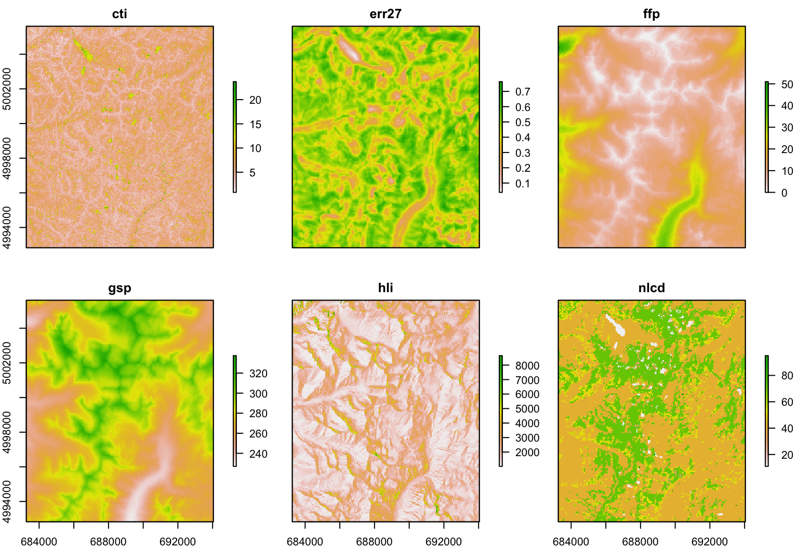
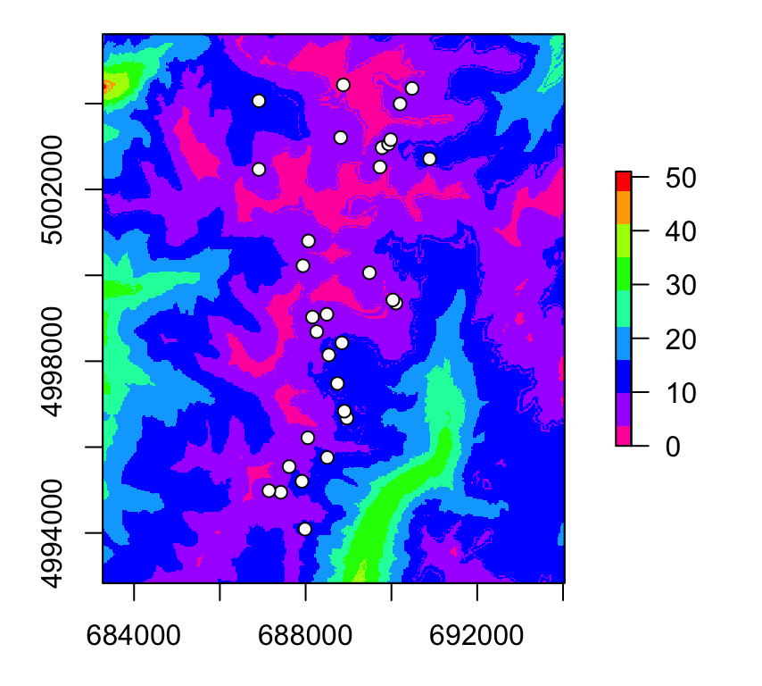
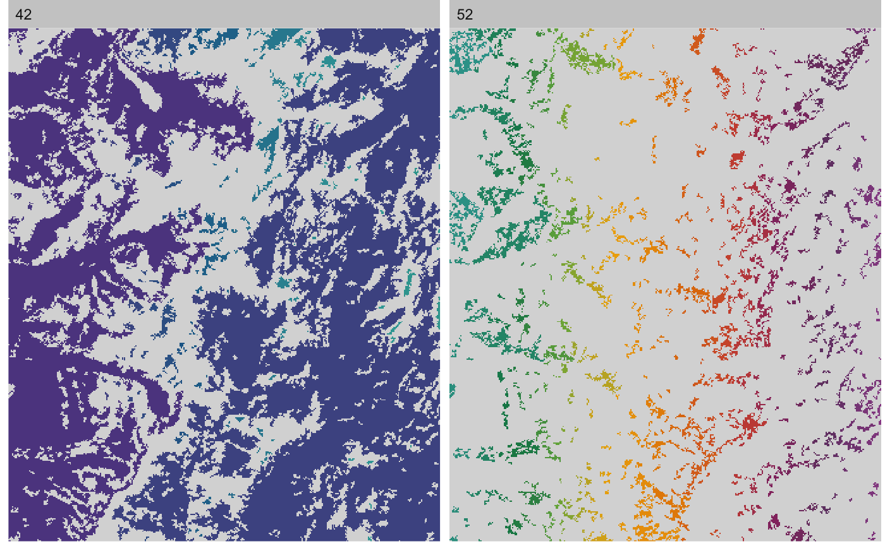
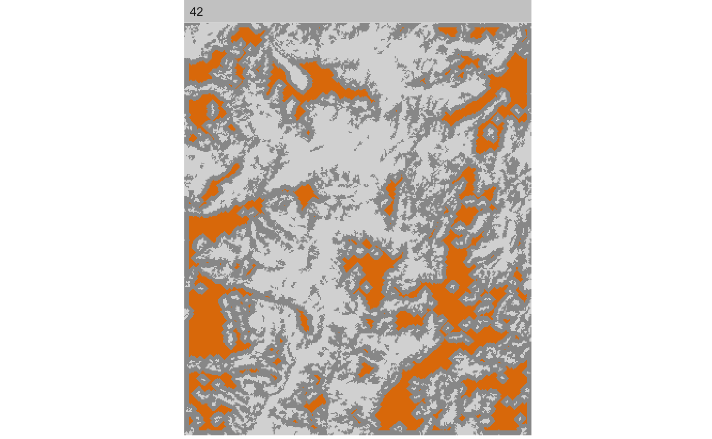
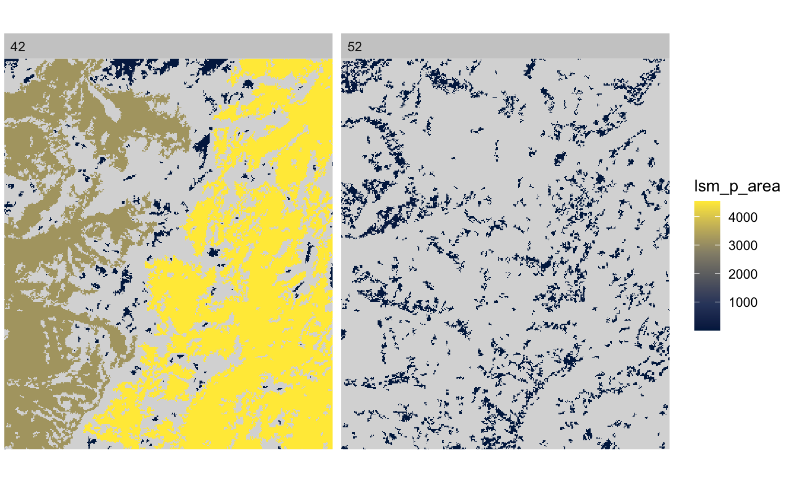
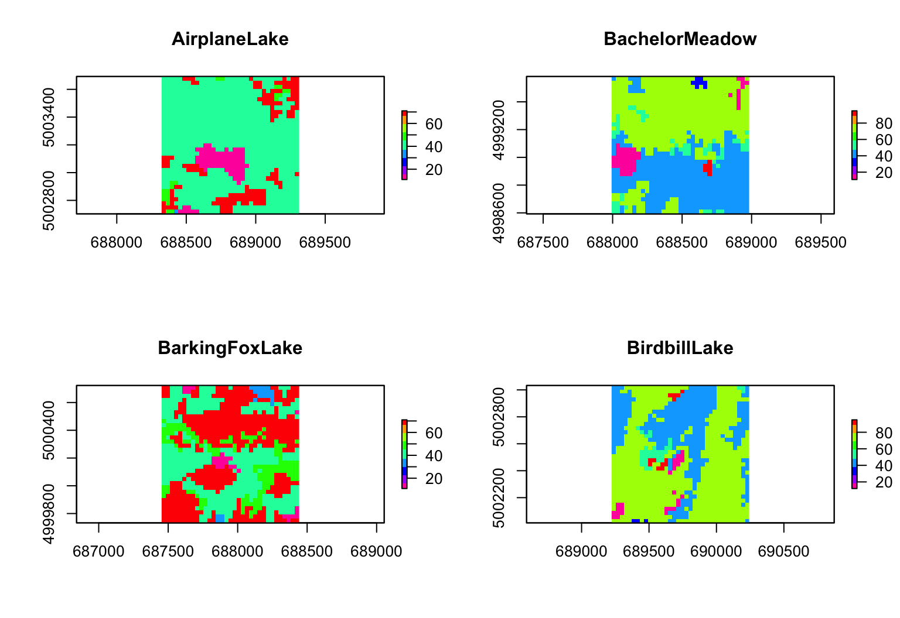

Week2_vignette.RmdThis code builds on data and code from the GeNetIt package by Jeff Evans and Melanie Murphy. Landscape metrics will be calculated with the landscapemetrics package described in: Hesselbarth et al. (2019), Ecography 42: 1648-1657.
This worked example shows:
Try modifying the code to import your own data!
This code uses landscape data and spatial coordinates from 30 locations where Colombia spotted frogs (Rana luteiventris) were sampled for the full data set analyzed by Funk et al. (2005) and Murphy et al. (2010). Please see the separate introduction to the data set.
We will extract values at sampling point locations and within a local neighborhood (buffer) from six raster maps (see Murphy et al. 2010 for definitions), which are included with the GeNetIt package as a SpatialPixelsDataFrame called ‘rasters’:
The site data are already in a SpatialPointsDataFrame named ralu.site that comes with the package GeNetIt. Use data(ralu.site) to load it. This will create an object ralu.site.
To demonstrate how to create a SpatialPointsDataFrame, we create a simple data frame Sites with the coordinates and site data.
## [1] "SpatialPointsDataFrame"
## attr(,"package")
## [1] "sp"Sites <- data.frame(ralu.site@coords, ralu.site@data) class(Sites)
## [1] "data.frame"head(Sites)
## coords.x1 coords.x2 SiteName Drainage Basin Substrate
## 1 688816.6 5003207 AirplaneLake ShipIslandCreek Sheepeater Silt
## 2 688494.4 4999093 BachelorMeadow WilsonCreek Skyhigh Silt
## 3 687938.4 5000223 BarkingFoxLake WaterfallCreek Terrace Silt
## 4 689732.8 5002522 BirdbillLake ClearCreek Birdbill Sand
## 5 690104.0 4999355 BobLake WilsonCreek Harbor Silt
## 6 688742.5 4997481 CacheLake WilsonCreek Skyhigh Silt
## NWI AREA_m2 PERI_m Depth_m TDS FISH ACB AUC
## 1 Lacustrine 62582.2 1142.8 21.64 2.5 1 0 0.411
## 2 Riverine_Intermittent_Streambed 225.0 60.0 0.40 0.0 0 0 0.000
## 3 Lacustrine 12000.0 435.0 5.00 13.8 1 0 0.300
## 4 Lacustrine 12358.6 572.3 3.93 6.4 1 0 0.283
## 5 Palustrine 4600.0 321.4 2.00 14.3 0 0 0.000
## 6 Palustrine 2268.8 192.0 1.86 10.9 0 0 0.000
## AUCV AUCC AUF AWOOD AUFV
## 1 0 0.411 0.063 0.063 0.464
## 2 0 0.000 1.000 0.000 0.000
## 3 0 0.300 0.700 0.000 0.000
## 4 0 0.283 0.717 0.000 0.000
## 5 0 0.000 0.500 0.000 0.500
## 6 0 0.000 0.556 0.093 0.352Question: What are the variable names for the spatial coordinates?
To illustrate importing spatial data from Excel, here we export the data as a csv file, import it again as a data frame, then convert it to a SpatialPointsDataFrame. First we create a folder output if it does not yet exist.
Note: to run the code, remove all the hashtags # at the beginning of the lines to uncomment them. This part assumes that you have writing permission on your computer. Alternatively, try setting up your R project folder on an external drive where you have writing permission.
The second line exports the data in Sites as a .csv file. The third line re-imports the .csv file to re-create data frame Sites.
#require(here) #if(!dir.exists(paste0(here(),"/output"))) dir.create(paste0(here(),"/output")) #write.csv(Sites, file=paste0(here(),"/output/ralu.site.csv"), # quote=FALSE, row.names=FALSE) #Sites <- read.csv(paste0(here(),"/output/ralu.site.csv"), header=TRUE)
The dataset Sites contains two columns with spatial coordinates and 17 attribute variables. So far, R treats the spatial coordinates like any other quantitative variables. To let R know this is spatial information, we import it into a spatial object type, a SpatialPointsDataFrame from the ‘sp’ package.
The conversion is done with the function coordinates, which takes a data frame and converts it to a spatial object of the same name. The code is not very intuitive.
Note: the tilde symbol ~ (here before the first coordinate) is often used in R formulas, we will see it again later. It roughly translates to “is modeled as a function of”.
Sites.sp <- Sites coordinates(Sites.sp) <- ~coords.x1+coords.x2
Now R knows these are spatial data and knows how to handle them. It does not treat the coordinates as variables anymore, hence the first column is now SiteName.
Before we can combine the sampling locations with other spatial datasets, such as raster data, we need to tell R where on earth these locations are (georeferencing). This is done by specifying the “Coordinate Reference System” (CRS) or a proj4 string.
For more information on CRS, see: https://www.nceas.ucsb.edu/~frazier/RSpatialGuides/OverviewCoordinateReferenceSystems.pdf
We know that these coordinates are UTM zone 11 (Northern hemisphere) coordinates, hence we can use a helper function to find the correct proj4string, using function get_proj4 from the tmaptools package. (For the Southern hemisphere, you would add s after the zone: utm11s). Here we call the function and the package simultaneously (this is good practice, as it helps keep track of where the functions in your code come from).
proj4string(Sites.sp) <- tmaptools::get_proj4("utm11")$proj4string
Note: this function only declares the existing projection, it does not change the coordinates to that projection.
If we had longitude and latitude coordinates, we would modify the command like this: proj4string(Sites.sp) <- tmaptools::get_proj4(“longlat”)$proj4string.
In case we needed to transform the projection from UTM zone 11 to longitude/latitude, we could create a new sp object Sites.sp.longlat. We use the function spTransform to change the projection from the projection of the old object Sites.sp to the “longlat” coordinate system, which we define by the argument CRSobj.
Sites.sp.longlat <- sp::spTransform(Sites.sp, CRSobj = tmaptools::get_proj4("longlat")$proj4string) head(Sites.sp.longlat@coords)
## coords.x1 coords.x2
## 1 -114.5977 45.15708
## 2 -114.6034 45.12016
## 3 -114.6100 45.13047
## 4 -114.5864 45.15067
## 5 -114.5828 45.12208
## 6 -114.6008 45.10560Question: Where on earth is this? You can enter the coordinates from the “longlat” projection in Google maps. Note that Google expects the Latitude (Y coordinate) first, then the Longitude (X coordinate). Here, coords.x1 is the longitude (X) and coords.x2 is the latitude (Y). Thus, to locate the first site in Google maps, you will need to enter 45.15708, -114.5977. Where is it located?
As an S4 object, Sites.sp has predefined slots. These can be accessed with the @ symbol:
slotNames(Sites.sp)
## [1] "data" "coords.nrs" "coords" "bbox" "proj4string"Here are the first few lines of the coordinates:
head(Sites.sp@coords)
## coords.x1 coords.x2
## 1 688816.6 5003207
## 2 688494.4 4999093
## 3 687938.4 5000223
## 4 689732.8 5002522
## 5 690104.0 4999355
## 6 688742.5 4997481And the proj4 string: Let’s compare this to the proj4string of the original ralu.site dataset.
Sites.sp@proj4string
## CRS arguments:
## +proj=utm +zone=11 +datum=WGS84 +units=m +no_defs +ellps=WGS84
## +towgs84=0,0,0The default for get_proj4("utm11") results in a slightly different proj4string than the ralu.site dataset. The difference is in the datum argument (WGS84 vs. NAD83):
ralu.site@proj4string
## CRS arguments:
## +proj=utm +zone=11 +datum=NAD83 +units=m +no_defs +ellps=GRS80
## +towgs84=0,0,0Let’s go with the original information and copy it:
Sites.sp@proj4string <- ralu.site@proj4string
The raster data for this project are already available in the package GeNetIt, under the name rasters, and we can load them with data(rasters). They are stored as a SpatialPixelsDataFrame, another S4 object type from the sp package.
## [1] "SpatialPixelsDataFrame"
## attr(,"package")
## [1] "sp"However, raster data are better analyzed with the package raster, which has an object type raster. Let’s convert the data to a RasterStack of RasterLayer objects (i.e. a set of raster layers with the same spatial reference information).
## [1] "RasterStack"
## attr(,"package")
## [1] "raster"Printing the name of the raster stack displays a summary. A few explanations:
RasterMaps## class : RasterStack
## dimensions : 426, 358, 152508, 6 (nrow, ncol, ncell, nlayers)
## resolution : 30, 30 (x, y)
## extent : 683282.5, 694022.5, 4992833, 5005613 (xmin, xmax, ymin, ymax)
## crs : +proj=utm +zone=11 +datum=NAD83 +units=m +no_defs +ellps=GRS80 +towgs84=0,0,0
## names : cti, err27, ffp, gsp, hli, nlcd
## min values : 8.429851e-01, 3.906551e-02, 0.000000e+00, 2.270000e+02, 1.014000e+03, 1.100000e+01
## max values : 23.7147598, 0.7637643, 51.0000000, 338.0696716, 9263.0000000, 95.0000000Now we can use plot, which knows what to do with a raster stack.
Note: layer nlcd is a categorical map of land cover types. See this week’s bonus materials for how to better display a categorical map in R.
plot(RasterMaps)

Some layers seem to show a similar pattern. It is easy to calculate the correlation between quantitative raster layers. Here, the last layer ncld, is in fact categorical (land cover type), and it’s correlation here is meaningless.
layerStats(RasterMaps, 'pearson', na.rm=T)
## $`pearson correlation coefficient`
## cti err27 ffp gsp hli nlcd
## cti 1.0000000 -0.25442672 0.12264734 -0.14029572 -0.30501483 -0.1807878
## err27 -0.2544267 1.00000000 -0.23467075 0.21403415 0.07724426 0.1256296
## ffp 0.1226473 -0.23467075 1.00000000 -0.95144256 -0.07567975 -0.3297561
## gsp -0.1402957 0.21403415 -0.95144256 1.00000000 0.09520075 0.3765363
## hli -0.3050148 0.07724426 -0.07567975 0.09520075 1.00000000 0.2465540
## nlcd -0.1807878 0.12562961 -0.32975610 0.37653635 0.24655404 1.0000000
##
## $mean
## cti err27 ffp gsp hli nlcd
## 5.3386441 0.4509513 11.2037444 277.2211529 1938.3644530 50.8191308We can specify a color ramp by setting the col argument. The default is terrain.colors(255). Here we change it to rainbow(9), a rainbow colorpalette with 9 color levels.
Note: To learn about options for the plot function for raster objects, access the help file by typing ?plot and select Plot a Raster object.
We can add the sampling locations (if we plot only a single raster layer). Here we use rev to reverse the color ramp for plotting raster layer ffp, and add the sites as white circles with black outlines.
par(mar=c(3,3,1,2)) plot(raster(RasterMaps, layer="ffp"), col=rev(rainbow(9))) points(Sites.sp, pch=21, col="black", bg="white")

Question: Recall that ‘ffp’ stands for frost free period (in days). What do you think is the average length of the frost free period at theses sampling sites?
The following code adds six variables to the data slot of Sites.sp. Technically we combine the columns of the existing data frame Sites.sp with the new columns in a new data frame with the same name.
R notices the difference in projection (CRS) between the sampling point data and the rasters and takes care of it, providing just a warning.
Sites.sp@data <- data.frame(Sites.sp@data, extract(RasterMaps, Sites.sp))
Let’s calcualate the mean length of the frost free period for these sites:
mean(Sites.sp@data$ffp)
## [1] 8.0963What land cover type is assigned to the most sampling units? Let’s tabulate them.
table(Sites.sp@data$nlcd)
##
## 11 12 42 52 71 90
## 3 1 21 1 4 1Note: land cover types are coded by numbers. Check here what the numbers mean: https://www.mrlc.gov/data/legends/national-land-cover-database-2016-nlcd2016-legend
Question: A total of 21 sites are classified as 42. What is this most frequent land cover type?
We are going to use the package landscapemetrics. It is an R package to calculate landscape metrics in a tidy workflow (for more information about tidy data see here). landscapemetrics is basically a reimplementation of ‘FRAGSTATS’, which allows an integration into larger workflows within the R environment. The core of the package are functions to calculate landscape metrics, but also several auxiliary functions exit.
To facilitate an integration into larger workflows, landscapemetrics is based on the raster package. To check if a raster is suitable for landscapemetrics, run the check_landscape() function first. The function checks the coordinate reference system (and mainly if units are in meters) and if the raster values are discrete classes. If the check fails, the calculation of metrics is still possible, however, especially metrics that are based on area and distances must be used with caution.
nlcd <- raster(RasterMaps, layer = "nlcd") landscapemetrics::check_landscape(nlcd)
## layer crs units class n_classes OK
## 1 1 projected m integer 8 ✓There are three different levels of landscape metrics. Firstly, metrics can be calculated for each single patch (a patch is defined as neighbouring cells of the same class). Secondly, metrics can be calculated for a certain class (i.e. all patches belonging to the same class) and lastly for the whole landscape. All these levels are implemented and easily accessible in landscapemetrics.
All functions to calculate metrics start with lsm_ (for landscapemetrics). The second part of the name specifies the level (patch - p, class - c or landscape - l). Lastly, the final part of the function name is the abbreviation of the corresponding metric (e.g. enn for the Euclidean nearest-neighbor distance). To list all available metrics, you can use the list_lsm() function. The function also allows to show metrics filtered by level, type or metric name. For more information about the metrics, please see either the corresponding helpfile(s) or https://r-spatialecology.github.io/landscapemetrics.
landscapemetrics::list_lsm(level = "landscape", type = "diversity metric")
## # A tibble: 9 x 5
## metric name type level function_name
## <chr> <chr> <chr> <chr> <chr>
## 1 msidi modified simpson's diversity in… diversity metr… landsca… lsm_l_msidi
## 2 msiei modified simpson's evenness ind… diversity metr… landsca… lsm_l_msiei
## 3 pr patch richness diversity metr… landsca… lsm_l_pr
## 4 prd patch richness density diversity metr… landsca… lsm_l_prd
## 5 rpr relative patch richness diversity metr… landsca… lsm_l_rpr
## 6 shdi shannon's diversity index diversity metr… landsca… lsm_l_shdi
## 7 shei shannon's evenness index diversity metr… landsca… lsm_l_shei
## 8 sidi simpson's diversity index diversity metr… landsca… lsm_l_sidi
## 9 siei simspon's evenness index diversity metr… landsca… lsm_l_sieilandscapemetrics::list_lsm(metric = "area")
## # A tibble: 7 x 5
## metric name type level function_name
## <chr> <chr> <chr> <chr> <chr>
## 1 area patch area area and edge metric patch lsm_p_area
## 2 area_cv patch area area and edge metric class lsm_c_area_cv
## 3 area_mn patch area area and edge metric class lsm_c_area_mn
## 4 area_sd patch area area and edge metric class lsm_c_area_sd
## 5 area_cv patch area area and edge metric landscape lsm_l_area_cv
## 6 area_mn patch area area and edge metric landscape lsm_l_area_mn
## 7 area_sd patch area area and edge metric landscape lsm_l_area_sdlandscapemetrics::list_lsm(level = c("class", "landscape"), type = "aggregation metric", simplify = TRUE)
## [1] "lsm_c_ai" "lsm_c_clumpy" "lsm_c_cohesion" "lsm_c_division"
## [5] "lsm_c_enn_cv" "lsm_c_enn_mn" "lsm_c_enn_sd" "lsm_c_iji"
## [9] "lsm_c_lsi" "lsm_c_mesh" "lsm_c_nlsi" "lsm_c_np"
## [13] "lsm_c_pd" "lsm_c_pladj" "lsm_c_split" "lsm_l_ai"
## [17] "lsm_l_cohesion" "lsm_l_contag" "lsm_l_division" "lsm_l_enn_cv"
## [21] "lsm_l_enn_mn" "lsm_l_enn_sd" "lsm_l_iji" "lsm_l_lsi"
## [25] "lsm_l_mesh" "lsm_l_np" "lsm_l_pd" "lsm_l_pladj"
## [29] "lsm_l_split"Note: This section explains different ways of calculating a selection of landscape metrics from a raster map with ‘landscapemetrics’. If this seems too technical for a first go, you may jump to section 4b.
To calculate a single metric, just use the corresponding function. The result of all landscape metric functions is always an identically structured tibble (i.e. an advanced data.frame). The first coloumn is the layer id (only interesting for e.g. a RasterStack). The second coloumn specifies the level (‘patch’, ‘class’ or ‘landscape’). The third coloumn is the class ID (NA on landscape level) and the fourth coloumn is the patch ID (NA on class- and landscape level). Lastly, The fith coloumn is the abbreviation of the metric and finally the corresponding value in the last coloumn.
# calculate percentage of landscape of class percentage_class <- lsm_c_pland(landscape = nlcd) percentage_class
## # A tibble: 8 x 6
## layer level class id metric value
## <int> <chr> <int> <int> <chr> <dbl>
## 1 1 class 11 NA pland 0.948
## 2 1 class 12 NA pland 0.441
## 3 1 class 31 NA pland 0.394
## 4 1 class 42 NA pland 59.1
## 5 1 class 52 NA pland 11.0
## 6 1 class 71 NA pland 28.1
## 7 1 class 90 NA pland 0.0557
## 8 1 class 95 NA pland 0.0210Questions:
Because the resulting tibble is type stable, you can easily row-bind (rbind) different metrics (even of different levels):
metrics <- rbind( landscapemetrics::lsm_c_pladj(nlcd), landscapemetrics::lsm_l_pr(nlcd), landscapemetrics::lsm_l_shdi(nlcd) ) metrics
## # A tibble: 10 x 6
## layer level class id metric value
## <int> <chr> <int> <int> <chr> <dbl>
## 1 1 class 11 NA pladj 77.9
## 2 1 class 12 NA pladj 52.5
## 3 1 class 31 NA pladj 48.8
## 4 1 class 42 NA pladj 89.9
## 5 1 class 52 NA pladj 58.6
## 6 1 class 71 NA pladj 81.6
## 7 1 class 90 NA pladj 41.8
## 8 1 class 95 NA pladj 32.8
## 9 1 landscape NA NA pr 8
## 10 1 landscape NA NA shdi 1.01To calculate a larger set of landscape metrics, you can just use the wrapper calculate_lsm(). The arguments are similar to list_lsm(), e.g. you can specify the level or the type of metrics to calculate. Alternatively, you can also provide a vector with the function names of metrics to calculate to the what argument.
However, watch out, for large rasters and many metrics, this can be rather slow (set progress = TRUE to get an progress report on the console). Also, we suggest to not just calculate all available metrics, but rather think about which ones might be actually suitable for your research question.
Calculate all patch-level metrics using wrapper:
nlcd_patch <- landscapemetrics::calculate_lsm(landscape = nlcd, level = "patch")
## Warning: The `x` argument of `as_tibble.matrix()` must have column names if `.name_repair` is omitted as of tibble 2.0.0.
## Using compatibility `.name_repair`.
## This warning is displayed once every 8 hours.
## Call `lifecycle::last_warnings()` to see where this warning was generated.nlcd_patch## # A tibble: 19,776 x 6
## layer level class id metric value
## <int> <chr> <int> <int> <chr> <dbl>
## 1 1 patch 11 1 area 0.450
## 2 1 patch 11 2 area 0.450
## 3 1 patch 11 3 area 41.7
## 4 1 patch 11 4 area 0.72
## 5 1 patch 11 5 area 6.12
## 6 1 patch 11 6 area 0.900
## 7 1 patch 11 7 area 0.900
## 8 1 patch 11 8 area 1.89
## 9 1 patch 11 9 area 0.09
## 10 1 patch 11 10 area 1.17
## # … with 19,766 more rowsShow abbreviation of all calculated metrics:
unique(nlcd_patch$metric)
## [1] "area" "cai" "circle" "contig" "core" "enn" "frac" "gyrate"
## [9] "ncore" "para" "perim" "shape"Calculate all aggregation metrics on landscape level:
nlcd_landscape_aggr <- landscapemetrics::calculate_lsm(landscape = nlcd, level = "landscape", type = "aggregation metric") nlcd_landscape_aggr
## # A tibble: 14 x 6
## layer level class id metric value
## <int> <chr> <int> <int> <chr> <dbl>
## 1 1 landscape NA NA ai 84.1
## 2 1 landscape NA NA cohesion 99.2
## 3 1 landscape NA NA contag 62.7
## 4 1 landscape NA NA division 0.804
## 5 1 landscape NA NA enn_cv 218.
## 6 1 landscape NA NA enn_mn 129.
## 7 1 landscape NA NA enn_sd 281.
## 8 1 landscape NA NA iji 43.0
## 9 1 landscape NA NA lsi 32.4
## 10 1 landscape NA NA mesh 2694.
## 11 1 landscape NA NA np 1648
## 12 1 landscape NA NA pd 12.0
## 13 1 landscape NA NA pladj 83.7
## 14 1 landscape NA NA split 5.09Calculate specific metrics:
nlcd_subset <- landscapemetrics::calculate_lsm(landscape = nlcd, what = c("lsm_c_pladj", "lsm_l_pr", "lsm_l_shdi")) nlcd_subset
## # A tibble: 10 x 6
## layer level class id metric value
## <int> <chr> <int> <int> <chr> <dbl>
## 1 1 class 11 NA pladj 77.9
## 2 1 class 12 NA pladj 52.5
## 3 1 class 31 NA pladj 48.8
## 4 1 class 42 NA pladj 89.9
## 5 1 class 52 NA pladj 58.6
## 6 1 class 71 NA pladj 81.6
## 7 1 class 90 NA pladj 41.8
## 8 1 class 95 NA pladj 32.8
## 9 1 landscape NA NA pr 8
## 10 1 landscape NA NA shdi 1.01The resulting tibble is easy to integrate into a workflow. For example, to get the ordered patch IDs of the 5% largest patches, the following code could be used.
The pipe operator %>% from the dplyr package passes the resulting object automatically to the next function as first argument.
Note: the last step (pulling the id variable only) could be done by adding this to the pipe: %>% dplyr::pull(id). Due to some package inconsistencies, this sometimes created an error. Here we extract the id variable in a separate step as a work-around.
id_largest <- nlcd_patch %>% # previously calculated patch metrics dplyr::filter(metric == "area") %>% # only patch area dplyr::arrange(-value) %>% # order by decreasing size dplyr::filter(value > quantile(value, probs = 0.95)) # get only patches larger than 95% quantile id_largest <- id_largest$id # get only patch id id_largest
## [1] 206 166 1265 1459 1549 1558 1421 427 1434 1385 226 3 386 1205 589
## [16] 1441 426 1059 1206 324 433 1195 315 1225 712 1266 1377 389 753 1528
## [31] 894 1510 286 563 240 1411 478 1364 435 1336 812 640 1376 1523 786
## [46] 467 485 1559 1244 284 1537 1574 718 814 499 864 955 1015 1430 443
## [61] 393 930 1250 548 851 885 1481 928 1554 43 164 281 1608 716 514
## [76] 802 1614 729 977 1488 37 357 1353Because the metric names are only abbreviated, there is also a way to include the full name in the results. For the wrapper, just set full_name = TRUE. For the rowbinded tibble, you can use the provided tibble called lsm_abbreviations_names that comes with the package and use e.g. dplyr::left_join() to combine it with your results.
Add full metrics name to result:
nlcd_subset_full_a <- landscapemetrics::calculate_lsm(nlcd, what = c("lsm_c_pladj", "lsm_l_pr", "lsm_l_shdi"), full_name = TRUE) nlcd_subset_full_a
## # A tibble: 10 x 9
## layer level class id metric value name type function_name
## <int> <chr> <int> <int> <chr> <dbl> <chr> <chr> <chr>
## 1 1 class 11 NA pladj 77.9 percentage of… aggregat… lsm_c_pladj
## 2 1 class 12 NA pladj 52.5 percentage of… aggregat… lsm_c_pladj
## 3 1 class 31 NA pladj 48.8 percentage of… aggregat… lsm_c_pladj
## 4 1 class 42 NA pladj 89.9 percentage of… aggregat… lsm_c_pladj
## 5 1 class 52 NA pladj 58.6 percentage of… aggregat… lsm_c_pladj
## 6 1 class 71 NA pladj 81.6 percentage of… aggregat… lsm_c_pladj
## 7 1 class 90 NA pladj 41.8 percentage of… aggregat… lsm_c_pladj
## 8 1 class 95 NA pladj 32.8 percentage of… aggregat… lsm_c_pladj
## 9 1 landsc… NA NA pr 8 patch richness diversit… lsm_l_pr
## 10 1 landsc… NA NA shdi 1.01 shannon's div… diversit… lsm_l_shdiAdd full metrics name to results calculated previously using left_join():
nlcd_subset_full_b <- dplyr::left_join(x = nlcd_subset, y = lsm_abbreviations_names, by = c("metric", "level")) nlcd_subset_full_b
## # A tibble: 10 x 9
## layer level class id metric value name type function_name
## <int> <chr> <int> <int> <chr> <dbl> <chr> <chr> <chr>
## 1 1 class 11 NA pladj 77.9 percentage of… aggregat… lsm_c_pladj
## 2 1 class 12 NA pladj 52.5 percentage of… aggregat… lsm_c_pladj
## 3 1 class 31 NA pladj 48.8 percentage of… aggregat… lsm_c_pladj
## 4 1 class 42 NA pladj 89.9 percentage of… aggregat… lsm_c_pladj
## 5 1 class 52 NA pladj 58.6 percentage of… aggregat… lsm_c_pladj
## 6 1 class 71 NA pladj 81.6 percentage of… aggregat… lsm_c_pladj
## 7 1 class 90 NA pladj 41.8 percentage of… aggregat… lsm_c_pladj
## 8 1 class 95 NA pladj 32.8 percentage of… aggregat… lsm_c_pladj
## 9 1 landsc… NA NA pr 8 patch richness diversit… lsm_l_pr
## 10 1 landsc… NA NA shdi 1.01 shannon's div… diversit… lsm_l_shdiTo only get the results for class 42 (evergreen forest), you can just dplyr::filter() the tibble (or use any other subset method you prefer).
forest_patch_metrics <- dplyr::filter(nlcd_patch, class == 42)
All functions make heavy use of connected components labeling to delineate patches (neighbouring cells of the same class). To get all patches of every class you can just use get_patches(). To get only a certain class, just specify the class argument and the neighbourhood rule can be chosen between 8-neighbour rule or 4-neighbour rule with the argument directions.
# connected components labeling of landscape cc_nlcd <- landscapemetrics::get_patches(nlcd, directions = 8) # show name of each class sapply(cc_nlcd, function(x) names(x))
## 11 12 31 42 52 71 90 95
## "layer" "layer" "layer" "layer" "layer" "layer" "layer" "layer"# the fourth list entry is class forest cc_forest_a <- cc_nlcd[4] cc_forest_b <- landscapemetrics::get_patches(nlcd, class = 42) # watch out: result is list with one entry cc_forest_a
## $`42`
## class : RasterLayer
## dimensions : 426, 358, 152508 (nrow, ncol, ncell)
## resolution : 30, 30 (x, y)
## extent : 683282.5, 694022.5, 4992833, 5005613 (xmin, xmax, ymin, ymax)
## crs : +proj=utm +zone=11 +datum=NAD83 +units=m +no_defs +ellps=GRS80 +towgs84=0,0,0
## source : memory
## names : layer
## values : 1, 222 (min, max)cc_forest_b## $`42`
## class : RasterLayer
## dimensions : 426, 358, 152508 (nrow, ncol, ncell)
## resolution : 30, 30 (x, y)
## extent : 683282.5, 694022.5, 4992833, 5005613 (xmin, xmax, ymin, ymax)
## crs : +proj=utm +zone=11 +datum=NAD83 +units=m +no_defs +ellps=GRS80 +towgs84=0,0,0
## source : memory
## names : layer
## values : 1, 222 (min, max)To plot the patches you can use the show_patches() function. Here we show patches of class 42 (forest) and class 52 (shrubland):
show_patches(landscape = nlcd, class = c(42, 52), labels = FALSE)

It is also possible to visualize only the core area of each patch using show_cores(). The core area is defined as all cells that are further away from the edge of each patch than a specified edge depth (e.g. 5 cells). Here we show core area with edge depth = 5 for class 42; try edge_depth = 1 for comparison:
show_cores(landscape = nlcd, class = c(42), edge_depth = 5, labels = FALSE)

Note: this may create a warning “no non-missing arguments to min; returning Inf” for each patch that does not have any core area. Here we suppressed the warnings for the chunk with the chunk option warning=FALSE.
Lastly, you can plot the map and fill each patch with the corresponding metric value, e.g. patch size, using show_lsm(). Notice that there are two very large patches in class 42:

Let’s add forest patch size to the Sites.sp data. To extract landscape metrics of the patch in which each sampling point is located, use extract_lsm(). Which metrics are extracted can be specified by the what argument (similar to calculate_lsm()). However, only patch-level metrics are available. Please be aware, that the resulting tibble now has a new column, namely the ID of the sampling point (in the same order as the input points).
# extract patch area of all classes: patch_size_sp <- extract_lsm(landscape = nlcd, y = Sites.sp, what = "lsm_p_area")
## Warning: Only using 'what' argument.# because we are only interested in the forest patch size, we set all area of class != 42 to 0: patch_size_sp_forest <- dplyr::mutate(patch_size_sp, value = dplyr::case_when(class == 42 ~ value, class != 42 ~ 0)) # add data to sp object: Sites.sp@data$ForestPatchSize <- patch_size_sp_forest$value Sites.sp@data$ForestPatchSize
## [1] 3179.88 0.00 3179.88 0.00 6.66 4539.33 4539.33 4539.33 0.00
## [10] 4539.33 4539.33 23.76 23.76 0.00 0.00 4539.33 0.00 4539.33
## [19] 3.60 3179.88 0.00 4539.33 3.87 4539.33 0.00 0.00 23.76
## [28] 3179.88 0.00 4539.33 0.09The package landscapemetrics has a built-in function sample_lsm to sample metrics in a buffer around sampling locations, which are provided with argument y. You can choose the shape of the buffer window (either a circle or a square) and, with the argument what, which metrics to sample (similar to calculate_lsm()).
The argument size specifies the buffer size in map units (e.g., meters): radius for circles, half of the side length for squares. Here, the value size = 500 results in a square window of 1000 m x 1000 m centered at the sampling location.
nlcd_sampled <- landscapemetrics::sample_lsm(landscape = nlcd, what = c("lsm_l_ta", "lsm_c_np", "lsm_c_pland", "lsm_c_ai"), shape = "square", y = Sites.sp, size = 500) nlcd_sampled
## # A tibble: 493 x 8
## layer level class id metric value plot_id percentage_inside
## <int> <chr> <int> <int> <chr> <dbl> <int> <dbl>
## 1 1 class 11 NA ai 88.6 1 98.0
## 2 1 class 31 NA ai NA 1 98.0
## 3 1 class 42 NA ai 93.3 1 98.0
## 4 1 class 52 NA ai 50 1 98.0
## 5 1 class 71 NA ai 65.9 1 98.0
## 6 1 class 11 NA np 2 1 98.0
## 7 1 class 31 NA np 1 1 98.0
## 8 1 class 42 NA np 2 1 98.0
## 9 1 class 52 NA np 4 1 98.0
## 10 1 class 71 NA np 8 1 98.0
## # … with 483 more rowsThe tibble now contains two additional columns. Firstly, the plot_id (in the same order as the input points) and secondly, the percentage_inside, i.e. what percentage of the buffer around the sampling location lies within the map. (In cases where the sampling location is on the edge of the landscape, the buffer around the sampling location could be only partly within the map). The value can also deviate from 100 % because the sampling locations are not necessarily in the cell center and the actually clipped cells lead to a slightly smaller or larger buffer area. A circular buffer shape increases this effect.
It is also possible to get the clippings of the buffer around sampling locations as a RasterLayer. For this, just set return_raster = TRUE.
# sample some metrics within buffer around sample location and returning sample # plots as raster nlcd_sampled_plots <- landscapemetrics::sample_lsm(landscape = nlcd, what = c("lsm_l_ta", "lsm_c_np", "lsm_c_pland", "lsm_c_ai"), shape = "square", y = Sites.sp, size = 500, return_raster = TRUE) nlcd_sampled_plots
## # A tibble: 493 x 9
## layer level class id metric value plot_id percentage_insi…
## <int> <chr> <int> <int> <chr> <dbl> <int> <dbl>
## 1 1 class 11 NA ai 88.6 1 98.0
## 2 1 class 31 NA ai NA 1 98.0
## 3 1 class 42 NA ai 93.3 1 98.0
## 4 1 class 52 NA ai 50 1 98.0
## 5 1 class 71 NA ai 65.9 1 98.0
## 6 1 class 11 NA np 2 1 98.0
## 7 1 class 31 NA np 1 1 98.0
## 8 1 class 42 NA np 2 1 98.0
## 9 1 class 52 NA np 4 1 98.0
## 10 1 class 71 NA np 8 1 98.0
## # … with 483 more rows, and 1 more variable: raster_sample_plots <list>The result will be a nested tibble containing the plot_id, the metrics and a RasterLayer with the clipped buffers (as a list). Attention: Because several metrics on class- and landscape-level the clipped buffers will be “repeated” several times.
Here we show results for the first four sampling locations:
unique_plots <- unique(nlcd_sampled_plots$raster_sample_plots)[1:4] par(mfrow = c(2,2)) plot(unique_plots[[1]], main = paste(Sites.sp$SiteName[1]), col = rev(rainbow(9))) plot(unique_plots[[2]], main = paste(Sites.sp$SiteName[2]), col = rev(rainbow(9))) plot(unique_plots[[3]], main = paste(Sites.sp$SiteName[3]), col = rev(rainbow(9))) plot(unique_plots[[4]], main = paste(Sites.sp$SiteName[4]), col = rev(rainbow(9)))

To extract a metrics you can just dplyr::filter() the resulting tibble and pull the value column. Here we filter the results for class == 42 (forest) and metric pland (percentage of landscape) and pull the results as a vector:
percentage_forest_500_a <- dplyr::pull(dplyr::filter(nlcd_sampled, class == 42, metric == "pland"), value) percentage_forest_500_a
## [1] 77.50230 39.57759 38.01653 31.40138 40.40404 83.30450 69.16221 86.80927
## [9] 10.19284 72.81910 92.19467 34.04635 34.84848 27.09447 31.37255 56.23886
## [17] 59.77961 58.73440 37.64922 60.12111 46.16756 32.32323 23.35640 50.44563
## [25] 66.93405 30.57851 33.70064 26.53811 45.18717 38.05704 62.47772As an alternative, here’s the same workflow again, but using a pipe:
percentage_forest_500_b <- nlcd_sampled %>% dplyr::filter(class == 42, metric == "pland") %>% dplyr::pull(value) percentage_forest_500_b
## [1] 77.50230 39.57759 38.01653 31.40138 40.40404 83.30450 69.16221 86.80927
## [9] 10.19284 72.81910 92.19467 34.04635 34.84848 27.09447 31.37255 56.23886
## [17] 59.77961 58.73440 37.64922 60.12111 46.16756 32.32323 23.35640 50.44563
## [25] 66.93405 30.57851 33.70064 26.53811 45.18717 38.05704 62.47772To extract the landscape metric ‘prop.landscape’ for all cover types as a tibble, just filter dplyr::filter() the tibble again, but only use the metric as filter.
# filter for percentage of landscape percentage_forest_500_df <- dplyr::filter(nlcd_sampled, metric == "pland") percentage_forest_500_df
## # A tibble: 154 x 8
## layer level class id metric value plot_id percentage_inside
## <int> <chr> <int> <int> <chr> <dbl> <int> <dbl>
## 1 1 class 11 NA pland 7.25 1 98.0
## 2 1 class 31 NA pland 0.0918 1 98.0
## 3 1 class 42 NA pland 77.5 1 98.0
## 4 1 class 52 NA pland 1.93 1 98.0
## 5 1 class 71 NA pland 13.2 1 98.0
## 6 1 class 11 NA pland 3.49 2 98.0
## 7 1 class 12 NA pland 1.01 2 98.0
## 8 1 class 31 NA pland 0.735 2 98.0
## 9 1 class 42 NA pland 39.6 2 98.0
## 10 1 class 52 NA pland 5.33 2 98.0
## # … with 144 more rowsThe percent cover of all cover types should add up to ~ 100% (i.e., 1) for each site. We can check this with the function dplyr::summarize(). First, we need to group the data using the plot_id, then sum all percentages.
# group by plot_id and sum all percentages pland_sum_a <- dplyr::summarize(dplyr::group_by(percentage_forest_500_df, by = plot_id), sum_pland = sum(value)) pland_sum_a
## # A tibble: 31 x 2
## by sum_pland
## <int> <dbl>
## 1 1 100
## 2 2 100
## 3 3 100
## 4 4 100
## 5 5 100
## 6 6 100.
## 7 7 100
## 8 8 100
## 9 9 100.
## 10 10 100
## # … with 21 more rowsSame workflow, but using a pipe:
pland_sum_b <- percentage_forest_500_df %>% dplyr::group_by(plot_id) %>% dplyr::summarize(sum_pland = sum(value)) pland_sum_b
## # A tibble: 31 x 2
## plot_id sum_pland
## <int> <dbl>
## 1 1 100
## 2 2 100
## 3 3 100
## 4 4 100
## 5 5 100
## 6 6 100.
## 7 7 100
## 8 8 100
## 9 9 100.
## 10 10 100
## # … with 21 more rowsFilterdplyr::filter() for class == 42 and add the sites names as coloumn to the resulting tibble.
# filter for class == 42 (forest) forest_500_df <- dplyr::filter(nlcd_sampled, class == 42) # data.frame with id and name of site SiteName_df <- data.frame(id = 1:length(Sites.sp$SiteName), site_name = Sites.sp$SiteName) # add site_name to metrics using plot_id and id of sampling sites forest_500_df <- dplyr::left_join(forest_500_df, SiteName_df, by = c("plot_id" = "id")) forest_500_df
## # A tibble: 93 x 9
## layer level class id metric value plot_id percentage_inside site_name
## <int> <chr> <int> <int> <chr> <dbl> <int> <dbl> <fct>
## 1 1 class 42 NA ai 93.3 1 98.0 AirplaneLake
## 2 1 class 42 NA np 2 1 98.0 AirplaneLake
## 3 1 class 42 NA pland 77.5 1 98.0 AirplaneLake
## 4 1 class 42 NA ai 89.4 2 98.0 BachelorMeadow
## 5 1 class 42 NA np 7 2 98.0 BachelorMeadow
## 6 1 class 42 NA pland 39.6 2 98.0 BachelorMeadow
## 7 1 class 42 NA ai 79.4 3 98.0 BarkingFoxLake
## 8 1 class 42 NA np 10 3 98.0 BarkingFoxLake
## 9 1 class 42 NA pland 38.0 3 98.0 BarkingFoxLake
## 10 1 class 42 NA ai 81.2 4 104. BirdbillLake
## # … with 83 more rowsDone!
Note: check this week’s bonus material if you want to see how to use the new ‘sf’ library for spatial data, and how to export the site data to a shapefile that you can import into a GIS.
Task: Create a bubble plot of the number of genotyped individuals in the dataset pulsatilla_genotypes.csv, using Latitude/Longitude coordinates.
Hints:
gstudio, dplyr, tibble and sp.pulsatilla_genotypes.csv into gstudio. Recall that the resulting object is a data.frame. Check the variables with function str. Which variables contain the sites and the spatial coordinates?group_by from library dplyr to group individuals (rows) by site (using pipe notation: %>%), and add the function summarize to count the number of genotyped individuals per population (i.e., sampling site). Recall that this can be done with nesting the function n within summarize:summarize(nIndiv = n()).Pulsatilla.summarize and separate them with a comma. E.g., to calculate both sample size and the mean of a variable myVar, you could write:summarize(nIndiv = n(), myMean = n(myVar))as_tibble to check.Pulsatilla to a “SpatialPointsDataFrame” object (package sp). Make sure to adjust the correct variable names for the coordinates (i.e., the variable names that you assigned in the previous step for the mean X and Y coordinates).proj4string(Pulsatilla) <- CRS("+init=epsg:31468")
Pulsatilla.longlat. Display the coords slot of Pulsatilla.longlat and check on Google maps where the first site is located.key.entries as it has a default.Pulsatilla.longlat as an R object using the following code:saveRDS(Pulsatilla.longlat, file = paste0(here::here(), "/output/Pulsatilla.longlat.rds")).Question: Where on earth are the sites in the Pulsatilla dataset located?